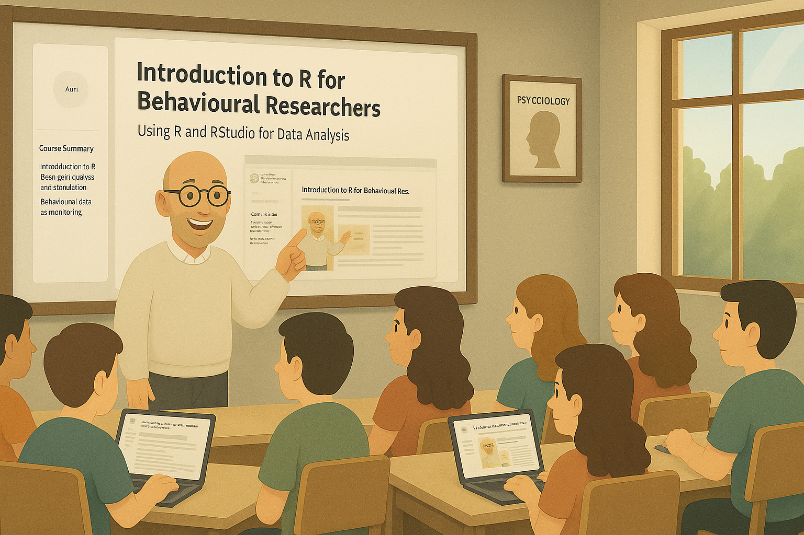

Introduction to R for Behavioural Researchers
Using R and RStudio for Data Analysis



This website is an introduction to R, designed to be used as a course for students who are new to R and RStudio, assuming little to no prior programming experience1:
In the course, students will learn basics of the R programming language, navigate RStudio and learn how to perform basic data analysis and visualization.
It will cover the following topics:
- Introduction to
Rand RStudio - Data types and structures in
R - Data visualization using
ggplot2 - Basic statistical analysis including t-tests and ANOVA
- Best practices for data analysis and reproducibility (e.g., using
gitand GitHub)
Working with the course material
The course is designed to be taught directly in the browser, using webR. This does not require any dependencies or software to be installed, and allows for changes to be made to the code directly in real time.
However, you can also choose to run the code directly in RStudio as well. To do this, please do the following (assuming you have R, RStudio and git installed):
1. Clone the GitHub repository
git clone https://github.com/sohaamir/r_intro_workshop.git
cd r_intro_workshop2. Restore the R environment
renv::restore()3. Open the rmd folder and run the scripts!
Contributors

Aamir Sohail
Aamir Sohail is an MRC Advanced Interdisciplinary Methods (AIM) DTP PhD student based at the Centre for Human Brain Health (CHBH), University of Birmingham, where he is supervised by Lei Zhang and Patricia Lockwood. He completed a BSc in Biomedical Science at Imperial College London, followed by an MSc in Brain Imaging at the University of Nottingham. He then worked as a Junior Research Fellow at the Centre for Integrative Neuroscience and Neurodynamics (CINN), University of Reading with Anastasia Christakou. His research interests involve using a combination of behavioural tasks, computational modeling and neuroimaging to understand social decision-making, and using this knowledge to inform the precision-based treatment of mental health disorders. Outside of research, he is also passionate about facilitating inclusivity and diversity in academia, as well as promoting open and reproducible science.
License
This course is licensed under a Creative Commons Attribution-ShareAlike 4.0 International License.
You are free to share, copy, and redistribute the material in any medium or format. Additionally, you can adapt, remix, transform, and build upon the material for any purpose, including commercial use. However, you must provide appropriate attribution, including credit to the original source, a link to the license, and an indication if changes were made. Furthermore, if you remix, transform, or build upon the material, you are required to distribute your contributions under the same license as the original.

Contact
For bug reports, issues or comments, please contact Aamir Sohail, or open a thread on the GitHub repository.
Footnotes
OpenAI (2025). Image created using ChatGPT (GPT4o) (https://chat.openai.com/). 5th May 2025.↩︎